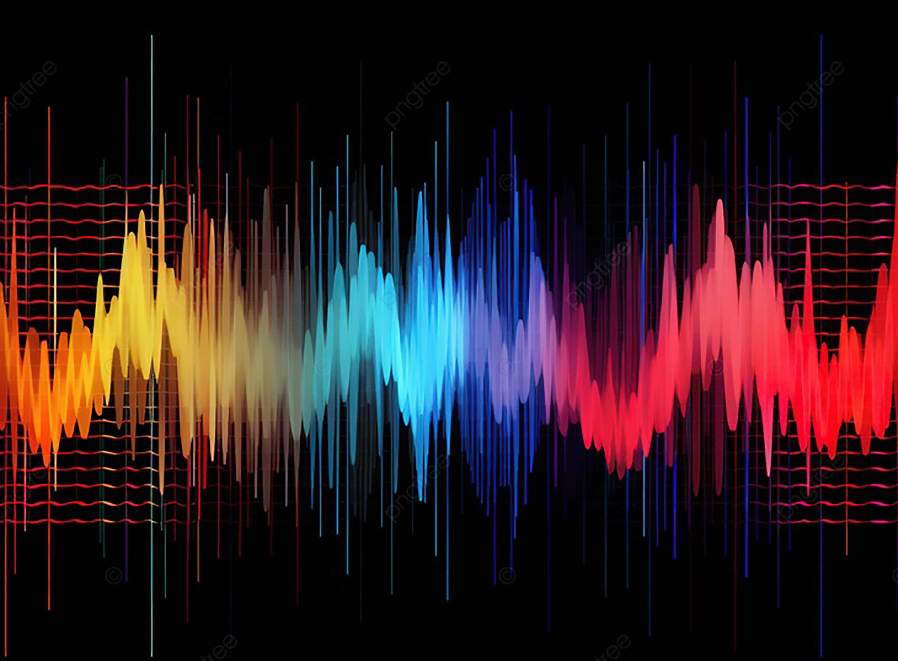

Sound Production Art - "Man of the City"The Art of Sound Waves 1/2Differences in Sound Production PlatformsPitch Adjusters 1/2Pitch Adjusters 2/2

The Art of Sound Waves 2/2Sound Breakdown from Metro Boomin's "Like That"Studio Art: "In his Element"